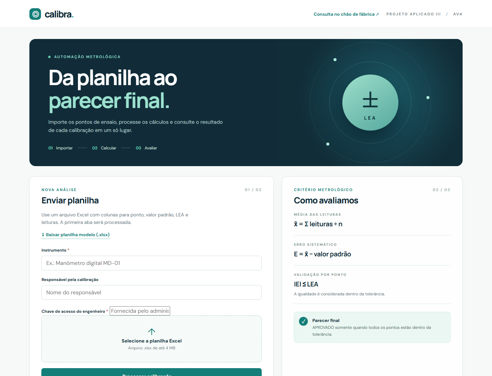
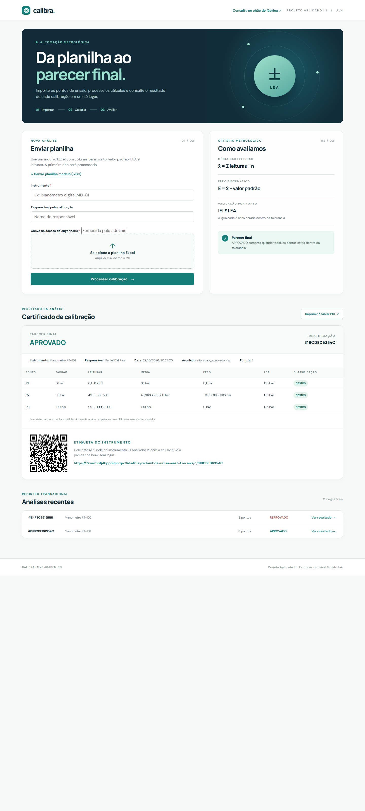
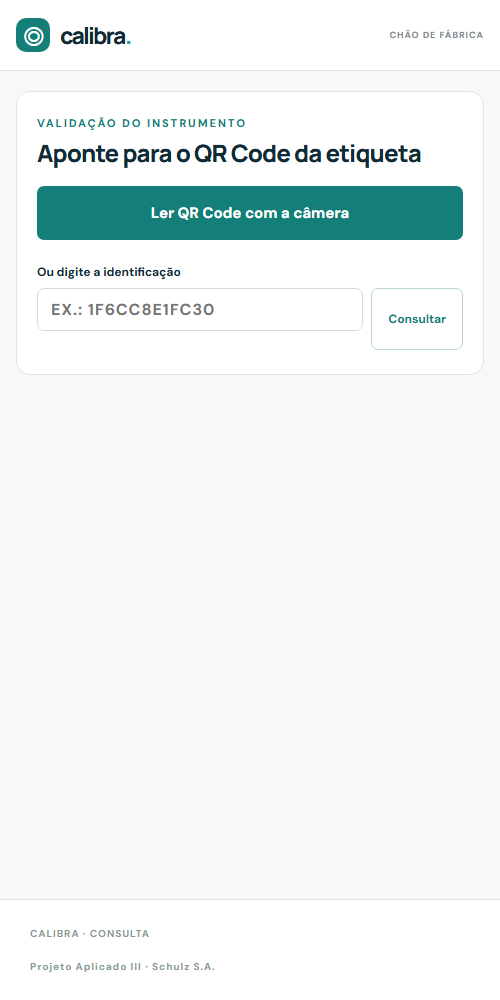
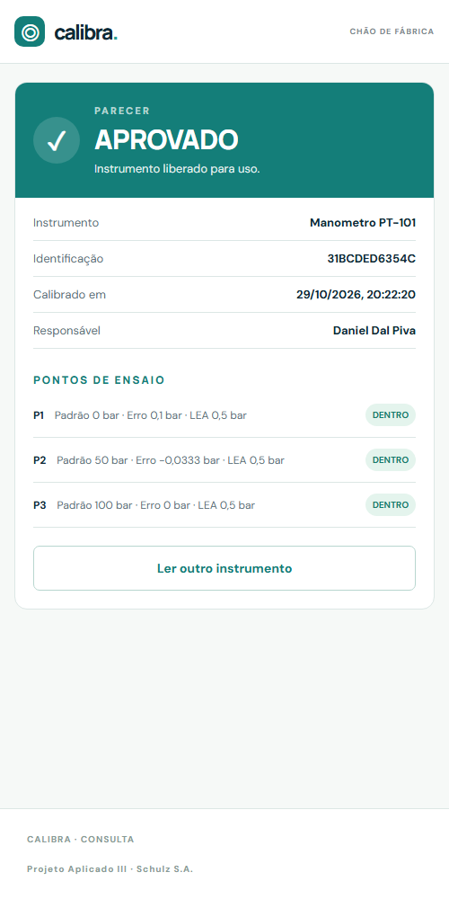
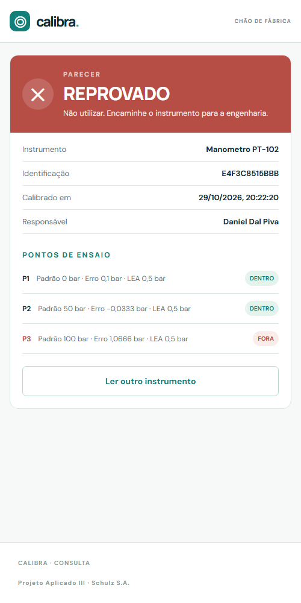
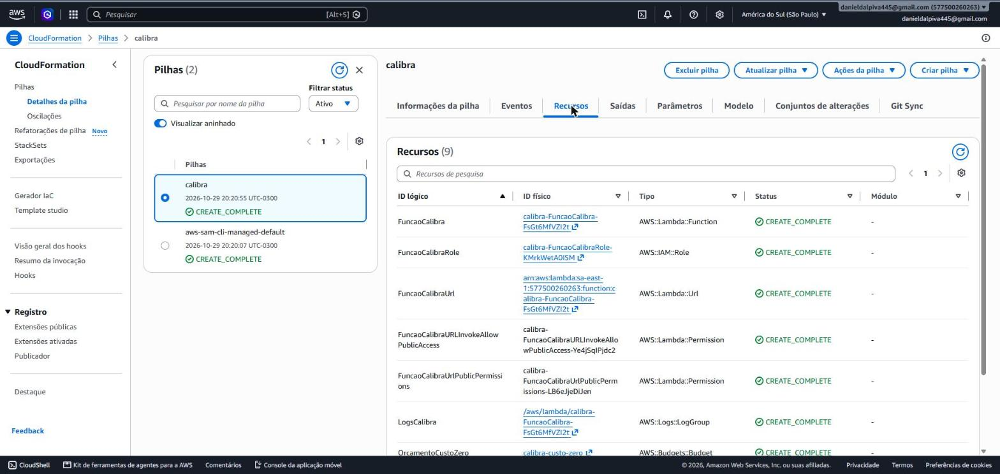
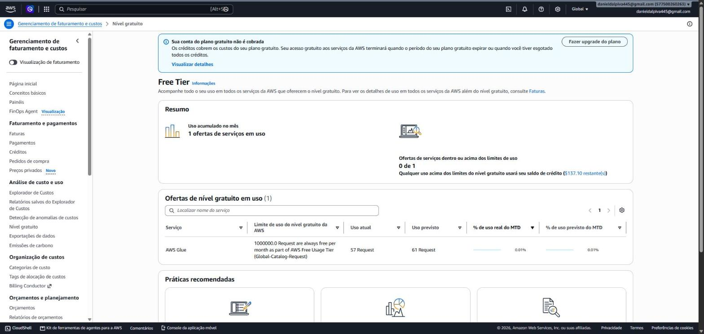

Consolidação final do projeto: plataforma web para engenheiros, consulta mobile no chão de fábrica e deploy serverless na AWS dentro da camada gratuita
Unidade curricular: Projeto Aplicado III
Docente: Prof. MSc. Hugo Menezes Barra
Empresa parceira: Schulz S.A.
Integrantes: Daniel Barrili Dal Piva e Mateus Vaz
Repositório GitHub: github.com/Danielpk17/projeto-aplicado-iii-calibracao
Vídeo no YouTube: link do vídeo
Plataforma em nuvem: https://7swe75rdj4bpp5lqvvzpc3ida40ieyrw.lambda-url.sa-east-1.on.aws/
Centro Universitário SENAI Santa Catarina · Análise e Desenvolvimento de Sistemas
Florianópolis, 29 de outubro de 2026
Na Schulz S.A., os certificados de calibração de instrumentos eram emitidos a partir de planilhas preenchidas manualmente, com cálculo de erro e conferência de tolerância feitos à mão e resultado guardado em arquivos dispersos. O operador no chão de fábrica não tinha como saber, diante do instrumento, se ele estava liberado para uso.
A AV4 integra o motor de cálculo da AV3 em dois canais publicados na AWS, que compartilham o mesmo backend e a mesma base de certificados:
/c/{id}, então tanto a página de consulta quanto a câmera nativa do celular abrem o resultado.Decimal, sem arredondar médias periódicas.Página única servida pelo próprio Lambda, em HTML, CSS e JavaScript sem framework. Funcionalidades: envio da planilha por arrastar e soltar, download da planilha modelo, resultado por ponto com destaque dos pontos fora do LEA, parecer final, histórico das 50 análises mais recentes, impressão do certificado em PDF pelo navegador e geração da etiqueta com QR Code.

Figura 1. Plataforma web publicada na AWS: envio da planilha e critério metrológico.

Figura 2. Certificado APROVADO emitido na nuvem, com a etiqueta de QR Code e o histórico.
A consulta (/consulta) foi desenhada para celular. O botão principal abre a câmera traseira com a biblioteca html5-qrcode; ao reconhecer o código, a página busca o certificado e mostra o parecer em tela cheia, em verde ou vermelho, com a tabela de pontos. Se a câmera não estiver disponível, o operador digita a identificação. A consulta é pública por desenho: o operador não precisa de login, e a identificação aleatória de 12 caracteres hexadecimais impede a enumeração dos certificados.

Figura 3. Tela de leitura do QR Code.

Figura 4. Instrumento APROVADO (ID 31BCDED6354C).

Figura 5. Instrumento REPROVADO, P3 fora do LEA (ID E4F3C8515BBB).
A solução atende às duas frentes do roteiro (plataforma web e aplicação mobile) com uma página web responsiva no lugar de um aplicativo nativo: o operador não precisa instalar nada, e a câmera do navegador funciona em HTTPS, que a Function URL já oferece.
Toda a infraestrutura está descrita como código em template.yaml (AWS SAM) e é criada por um único script. O mesmo código roda localmente com SQLite (server.py) e na nuvem com DynamoDB (src/lambda_function.py); as rotas ficam em src/web.py e são compartilhadas pelos dois ambientes.
| Serviço | Uso no Calibra | Limite gratuito | Consumo esperado |
|---|---|---|---|
| AWS Lambda + Function URL | Páginas, API e cálculos | 1 milhão de requisições e 400 mil GB-s por mês, sempre gratuito | Centenas de requisições por mês |
| Amazon DynamoDB | Persistência dos certificados | 25 GB e 25 RCU/WCU provisionadas, sempre gratuito | 2 RCU e 2 WCU (tabela e índice), poucos MB |
| CloudWatch Logs | Logs da função | 5 GB por mês | Poucos MB, retenção de 7 dias |
| AWS Budgets | Alerta de custo | 2 orçamentos gratuitos | 1 orçamento |
| Amazon S3 | Artefatos do deploy (SAM) | 5 GB nos 12 primeiros meses | Alguns KB |
X-Chave), guardada em variável de ambiente do Lambda e comparada em tempo constante. O template recebe a chave como parâmetro NoEcho. A função tem permissão apenas de CRUD na própria tabela. Numa versão de produção, a chave iria para o Secrets Manager e o login seria por Amazon Cognito.O deploy é reprodutível e feito por script, a partir de um clone do repositório. Pré-requisitos: conta AWS, Python 3.13, AWS CLI e AWS SAM CLI.
sam build e sam deploy e imprime as saídas UrlPlataforma e UrlConsulta.UrlPlataforma, processando a planilha modelo e lendo o QR Code gerado pelo celular em UrlConsulta.Novas versões são publicadas rodando o mesmo script, que aplica apenas as diferenças via CloudFormation. Para remover tudo: .\deploy\destroy.ps1. A tabela DynamoDB tem política Retain para não perder certificados numa remoção acidental. Em Linux ou macOS o equivalente é deploy/deploy.sh.

Figura 6. Stack calibra em CREATE_COMPLETE no CloudFormation (sa-east-1), com Lambda, Function URL, papel IAM, logs e orçamento.

Figura 7. Painel do nível gratuito: conta sem cobrança e nenhum serviço acima dos limites.
Plataforma Web Gestora: https://7swe75rdj4bpp5lqvvzpc3ida40ieyrw.lambda-url.sa-east-1.on.aws/
Consulta no chão de fábrica: https://7swe75rdj4bpp5lqvvzpc3ida40ieyrw.lambda-url.sa-east-1.on.aws/consulta
Cada requisito liga a necessidade levantada na Schulz S.A. à etapa em que surgiu, ao código que o implementa e à forma de verificação.
| ID | Requisito | Origem | Implementação | Verificação | Status |
|---|---|---|---|---|---|
| RF01 | Importar leituras de calibração a partir de planilha Excel padronizada | AV1 | calibration.py, POST /api/processar | Teste de upload; Fig. 1 | Atendido |
| RF02 | Calcular média e erro sistemático por ponto de ensaio | AV3 | calibration.py | Teste de erro negativo | Atendido |
| RF03 | Classificar cada ponto pelo LEA e emitir parecer APROVADO ou REPROVADO | AV3 | calibration.py | Testes de ponto fora, erro igual ao LEA e média periódica | Atendido |
| RF04 | Rejeitar entradas inválidas (arquivo, cabeçalho, LEA negativo, fórmulas) | AV3 | calibration.py, web.py | Testes de LEA negativo, fórmula, arquivo e XLSX inválidos | Atendido |
| RF05 | Persistir cada certificado e consultá-lo depois | AV3 | storage.py (SQLite e DynamoDB) | Testes de persistência local e no DynamoDB | Atendido |
| RF06 | Listar o histórico de análises | AV1 | GET /api/certificados, app.js | Teste de listagem; Fig. 1 | Atendido |
| RF07 | Imprimir o certificado de calibração | AV1 | index.html, app.js | Fig. 2; vídeo | Atendido |
| RF08 | Gerar etiqueta com QR Code por instrumento | AV4 | app.js, qrcode.min.js | Fig. 2; vídeo | Atendido |
| RF09 | Ler o QR Code pelo celular e exibir o parecer na hora | AV4 | consulta.html, consulta.js, rota /c/{id} | Teste do link do QR; Fig. 3 a 5; vídeo | Atendido |
| RF10 | Disponibilizar a planilha modelo para download | AV3 | GET /modelo.xlsx | Teste de download binário | Atendido |
| RNF01 | Operar na AWS estritamente dentro da camada gratuita | AV2 | template.yaml, AWS Budgets | Fig. 7; alerta de US$ 0,01 | Atendido |
| RNF02 | Arquitetura serverless e infraestrutura como código | AV2 | template.yaml, deploy/ | Fig. 6; roteiro de deploy | Atendido |
| RNF03 | Restringir o envio de planilhas aos engenheiros | AV4 | web.py (X-Chave, tempo constante) | Teste da chave de acesso | Atendido |
| RNF04 | Consulta mobile sem login e sem instalação | AV4 | consulta.html responsiva, ID aleatório | Fig. 3 a 5; teste de ID inexistente (404) | Atendido |
| RNF05 | Precisão numérica sem arredondamento indevido | AV3 | Decimal em calibration.py | Teste de média periódica | Atendido |
| RNF06 | Comunicação cifrada (HTTPS) | AV2 | Lambda Function URL | URL publicada; câmera liberada no navegador | Atendido |
O comando python -m unittest discover -s tests -v roda antes de todo deploy. Resultado: 14 testes, 14 aprovados.
| Grupo | Verificações | Resultado |
|---|---|---|
| Regras de cálculo (AV3) | Modelo aprovado com erro negativo; um ponto fora reprova; erro igual ao LEA fica dentro; média periódica não arredonda para dentro | 4 de 4 |
| Validação de entrada | LEA negativo, fórmula e arquivo inválido rejeitados | 3 de 3 |
| Fluxo HTTP local (SQLite) | Upload persiste e é consultado; XLSX inválido retorna 400 | 2 de 2 |
| Handler do Lambda (DynamoDB simulado) | Upload pela Function URL; página do QR; download do modelo; chave protege só o envio; certificado inexistente retorna 404 | 5 de 5 |
O vídeo narrado mostra a execução completa na AWS: acesso à URL publicada, download da planilha modelo, processamento de um cenário aprovado e de um reprovado, histórico, impressão do certificado, geração da etiqueta, leitura do QR Code pelo celular no chão de fábrica e o painel de custos zerado.
Vídeo no YouTube: link do vídeo
Repositório: https://github.com/Danielpk17/projeto-aplicado-iii-calibracao
O projeto saiu de um processo manual e fragmentado para um ecossistema em que o certificado nasce de uma planilha validada, fica registrado na nuvem e chega ao operador por um QR Code colado no próprio instrumento. A arquitetura serverless mantém o custo em zero para o volume da Schulz S.A. e escala sem mudança de código se o uso crescer.
O sistema é acadêmico: não calcula incerteza de medição nem substitui a rastreabilidade formal e a assinatura de um laboratório acreditado. Como evolução, propõe-se login com Amazon Cognito, chave no Secrets Manager, validade do certificado com alerta de recalibração e integração com o cadastro de instrumentos da empresa.